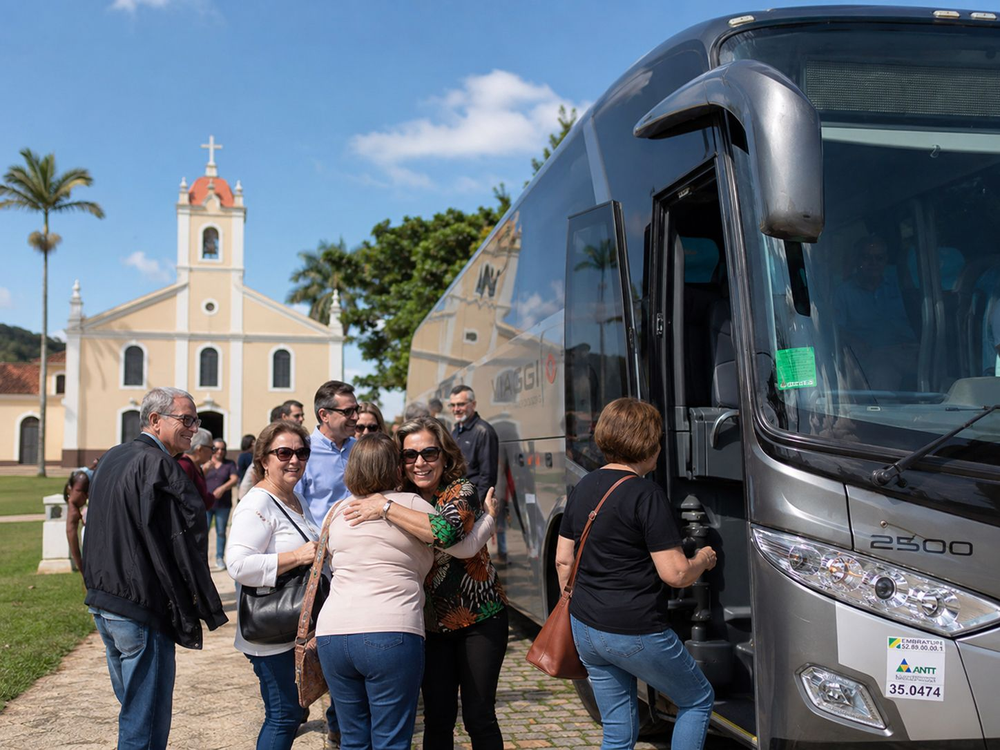

Atendimento acolhedor
Atenção especial a grupos com famílias e idosos, com viagem tranquila e organizada.
Transporte para romarias, retiros, congressos e encontros religiosos, com embarques organizados e atenção a famílias e idosos.
A GOOBUS atende igrejas e grupos religiosos no transporte para romarias, retiros, congressos e encontros, cuidando da organização dos embarques e do conforto durante o trajeto.
O objetivo é que o grupo se concentre no que importa, a experiência da viagem, enquanto a logística do transporte fica por nossa conta.
Indicado para

Atenção especial a grupos com famílias e idosos, com viagem tranquila e organizada.
Definição de pontos e horários de embarque para reunir o grupo sem correria.
Categoria adequada ao número de participantes e à distância do destino.
Com esses dados em mãos, a equipe avalia a melhor solução e responde com uma proposta sob medida.
Leva poucos minutos. Você pode concluir pelo formulário ou continuar pelo WhatsApp.
Solicitar orçamento Falar no WhatsAppConte os detalhes e receba uma proposta sob medida da GOOBUS.